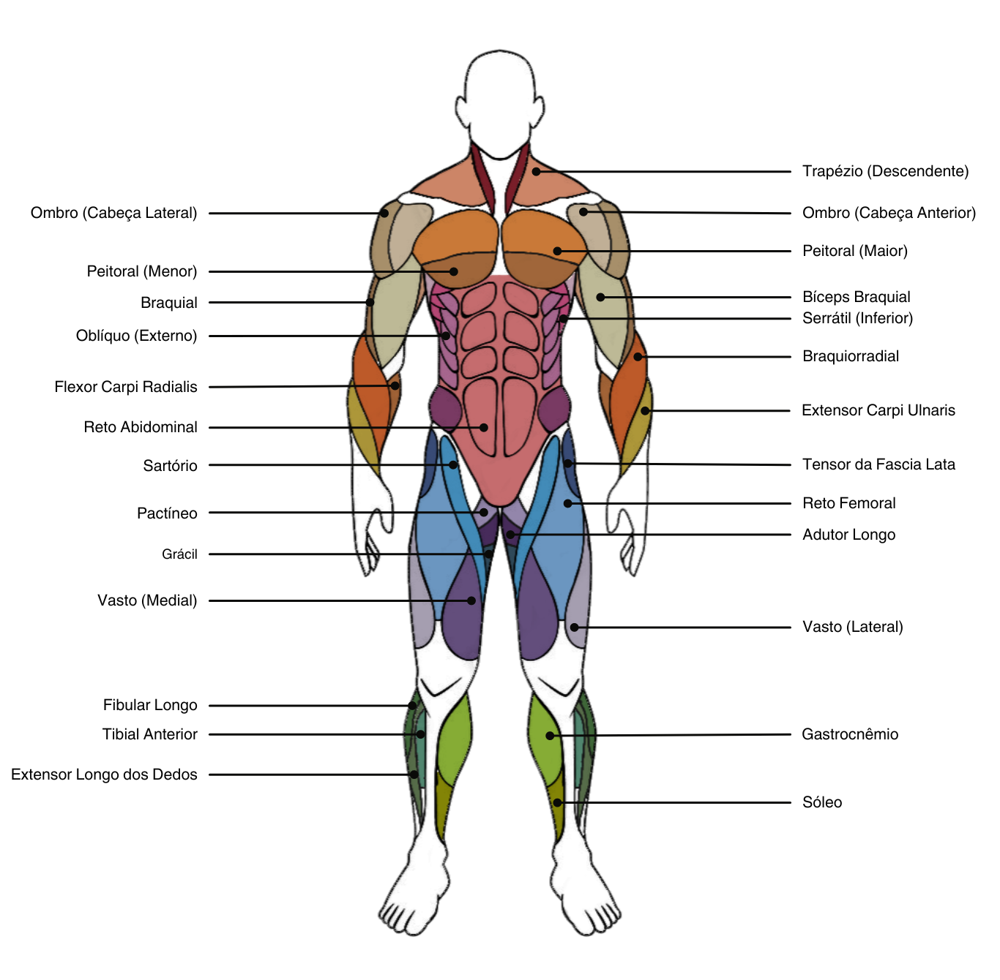

Antes de mergulharmos nos detalhes dos exercícios de musculação, é fundamental compreender o sistema muscular do corpo humano. Esta compreensão fornecerá uma base sólida para a realização dos exercícios de forma eficaz e segura, garantindo que você aproveite ao máximo cada treino. Vamos agora explorar os principais grupos musculares do corpo e como eles funcionam em conjunto para nos proporcionar força, mobilidade e estabilidade.

Click em algum grupo e veja sua descrição.
Peito:
O grupo muscular do peito é composto principalmente pelo músculo peitoral maior e peitoral menor, que estão localizados na região anterior do tórax e são responsáveis por diversos movimentos dos braços.
Peitoral (Maior):
• O peitoral maior é um músculo grande em forma de leque que se estende pela parte superior do tórax. Ele se origina no esterno, na clavícula e nas costelas e se insere no úmero. Sua principal função é realizar a flexão, adução e rotação interna do braço no ombro.
Peitoral (Menor):
• O peitoral menor é um músculo menor situado abaixo do peitoral maior. Ele se origina nas costelas e se insere na escápula. Sua principal função é estabilizar a escápula durante movimentos dos braços, auxiliando na elevação do ombro e na rotação da escápula para cima.
Braço
O braço é a região entre o ombro e o cotovelo, composta principalmente por músculos que movimentam o antebraço em relação ao braço e realizam movimentos de flexão e extensão do cotovelo. Inclui dois dos principais grupos musculares do membro superior: o bíceps e o tríceps.
Bíceps:
• Bíceps Braquial: O bíceps braquial é um músculo superficial que se destaca na parte frontal do braço. Ele consiste em duas cabeças - uma longa e uma curta - que se originam na escápula e se inserem no rádio. Sua principal função é a flexão do cotovelo e a supinação do antebraço.
• Braquial: Localizado profundamente sob o bíceps, o músculo braquial também é responsável pela flexão do cotovelo, auxiliando no movimento de dobrar o braço.
Tríceps:
• Tríceps (Cabeça Lateral): Uma das três cabeças do tríceps braquial, localizada na parte externa do braço. O tríceps (cabeça lateral) é responsável por estender o cotovelo.
• Tríceps (Cabeça Longa): Outra das três cabeças do tríceps braquial, situada na parte posterior do braço. O tríceps (cabeça longa) também é responsável pela extensão do cotovelo.
• Tríceps (Cabeça Médial): A terceira cabeça do tríceps braquial, situada na parte interna do braço. O tríceps (cabeça medial) contribui para a extensão do cotovelo, completando o conjunto de músculos que formam o tríceps.
Antebraço:
O antebraço é a região do membro superior entre o cotovelo e o pulso. Ele contém uma variedade de músculos que são responsáveis por movimentos finos e precisos das mãos e dos dedos, bem como pela estabilização e controle do punho. Esses músculos são divididos em grupos flexores e extensores, que trabalham em conjunto para permitir uma ampla gama de movimentos das mãos e dos dedos.
Flexor Carpi Radialis:
• O Flexor Carpi Radialis é um músculo localizado na parte anterior do antebraço. Ele se origina no epicôndilo lateral do úmero e se insere na base do segundo metacarpo. Sua principal função é flexionar e abduzir o punho.
Extensor Carpi Ulnaris:
• O Extensor Carpi Ulnaris é um músculo situado na parte posterior do antebraço. Ele se origina na epitróclea do úmero e na crista do músculo braquiorradial, e se insere na base do quinto metacarpo. Sua principal função é estender e aduzir o punho.
Flexor Carpi Ulnaris:
• O Flexor Carpi Ulnaris é um músculo localizado na parte posterior e medial do antebraço. Ele se origina na epitróclea do úmero e no epicôndilo medial, e se insere na base do quinto metacarpo. Sua principal função é flexionar e aduzir o punho.
Braquiorradial:
• O Braquiorradial é um músculo localizado na parte lateral do antebraço. Ele se origina na linha supracondilar lateral do úmero e se insere na superfície lateral da estilóide do rádio. Sua principal função é flexionar o cotovelo e pronar o antebraço.
Ombro:
O ombro é uma articulação complexa que permite uma ampla gama de movimentos, incluindo flexão, extensão, abdução, adução e rotação do braço. É composto por diversos músculos que estabilizam e movimentam a articulação do ombro em várias direções. Esses músculos incluem o deltóide, o manguito rotador e os músculos da escápula.
Ombro (Cabeça Anterior):
• A cabeça anterior do ombro refere-se principalmente à porção anterior do músculo deltóide, que é um músculo largo que cobre a articulação do ombro. Essa porção do deltóide se origina na clavícula e é responsável principalmente por flexionar o braço no ombro e girá-lo para dentro.
Ombro (Cabeça Lateral):
• A cabeça lateral do ombro é a porção média do músculo deltóide. Ela se origina na parte superior do acrômio e é responsável principalmente pela abdução do braço, ou seja, levantar o braço para o lado do corpo.
Ombro (Cabeça Posterior):
• A cabeça posterior do ombro refere-se à porção posterior do músculo deltóide. Ela se origina na espinha da escápula e é responsável principalmente pela extensão do braço no ombro, como quando você empurra algo para trás, e também pela rotação externa do braço.
Costas:
O grupo muscular das costas é composto por diversos músculos que atuam na estabilização e movimentação da coluna vertebral, escápulas e braços. Eles desempenham um papel crucial na postura, no suporte durante atividades físicas e no movimento dos membros superiores.
Trapézio (Descendente):
• O trapézio descendente é uma porção do músculo trapézio que se origina na nuca e se insere na borda lateral da escápula. Ele auxilia na rotação e depressão da escápula, contribuindo para movimentos como abaixar os ombros.
Trapézio (Ascendente):
• O trapézio ascendente é outra porção do músculo trapézio, que se origina na região torácica e se insere na borda medial da escápula. Ele ajuda na elevação e rotação da escápula, facilitando movimentos como levantar os ombros.
Infra-Espinhal:
• O infra-espinhal é um músculo localizado na parte posterior do ombro. Ele se origina na fossa infra-espinhal da escápula e se insere no úmero. Sua principal função é realizar a rotação externa do braço e estabilizar a articulação do ombro.
Latíssimo do Dorso:
• O latíssimo do dorso é um músculo largo e plano localizado na parte lateral e posterior do tronco. Ele se estende desde a região lombar até a borda inferior da escápula e se insere no úmero. Sua principal função é realizar a adução, extensão e rotação medial do braço.
Serrátil (Inferior):
• O serrátil inferior é um músculo localizado na parte inferior da caixa torácica. Ele se origina nas últimas costelas e se insere na borda anterior da escápula. Sua principal função é estabilizar a escápula durante movimentos dos membros superiores, como elevar os braços para frente.
Serrátil (Posterior):
• O serrátil posterior é um músculo localizado na região lateral do tórax. Ele se origina na região cervical e torácica e se insere nas costelas. Sua principal função é elevar as costelas durante a inspiração, auxiliando na expansão da caixa torácica durante a respiração.
Romboides:
• Os romboides são músculos localizados na parte superior das costas. Eles se dividem em dois grupos: romboides menor e maior. Ambos se originam na espinha torácica e se inserem na escápula. Sua principal função é retrair e estabilizar a escápula, ajudando a manter uma postura ereta e estável.
Abdômen:
Os músculos do abdômen desempenham um papel crucial na estabilização do tronco, na postura e na realização de movimentos de flexão, rotação e lateralização do tronco.
Oblíquo (Externo):
• O oblíquo externo é um dos músculos do abdômen e está localizado nas laterais do tronco. Ele se estende diagonalmente da caixa torácica até a pelve e é responsável por flexionar e girar o tronco para o lado oposto.
Reto Abdominal:
• O reto abdominal é um músculo longo que se estende verticalmente ao longo da frente do abdômen. Ele é conhecido popularmente como "gominho" ou "tanquinho" quando bem desenvolvido. Sua principal função é flexionar o tronco, aproximando o tórax e a pélvis.
Glúteos:
Os glúteos são um grupo de músculos localizados na região glútea, que compreende o glúteo máximo, médio e mínimo. Eles desempenham um papel importante na estabilização do quadril e na realização de movimentos de extensão e rotação do quadril.
Glúteo Máximo:
• O glúteo máximo é o maior e mais superficial dos músculos glúteos. Ele se origina na superfície posterior do osso ilíaco e na parte posterior do sacro e se insere no fêmur. Sua principal função é estender e rotacionar externamente o quadril, além de estabilizar a pelve durante a marcha e outros movimentos.
Glúteo Médio:
• O glúteo médio é um músculo localizado abaixo do glúteo máximo. Ele se origina na superfície externa do osso ilíaco e se insere no trocanter maior do fêmur. Sua principal função é abduzir e medialmente rotacionar o quadril, além de estabilizar a pelve durante a marcha e outros movimentos.
Perna:
Os músculos da perna são responsáveis por diversos movimentos do quadril, joelho, tornozelo e pé, incluindo flexão, extensão, adução, abdução e rotação.
Coxas:
• Sartório: O sartório é o músculo mais longo do corpo humano. Ele se origina na crista ilíaca e se insere na tuberosidade da tíbia. Sua principal função é flexionar o quadril e o joelho e realizar a rotação lateral da coxa.
• Pactíneo: O pactíneo é um músculo fino e longo localizado na parte interna da coxa. Ele se origina no osso ilíaco e se insere na linha pectínea do fêmur. Sua principal função é aduzir a coxa e flexionar o quadril.
• Adutor Longo: O adutor longo é um músculo da parte interna da coxa. Ele se origina no osso púbico e se insere no fêmur. Sua principal função é aduzir a coxa.
• Grácil: O grácil é um músculo longo e fino que se estende da pelve até a tíbia. Ele se origina no osso púbico e se insere na face medial da tíbia. Sua principal função é aduzir a coxa e flexionar o joelho.
• Vasto (Lateral): O vasto lateral é um dos músculos do quadríceps femoral, localizado na parte frontal da coxa. Ele se origina no fêmur e se insere na patela e na tuberosidade da tíbia. Sua principal função é estender o joelho.
• Vasto (Medial): O vasto medial é outro músculo do quadríceps femoral, situado na parte interna da coxa. Ele se origina no fêmur e se insere na patela e na tuberosidade da tíbia. Sua principal função é estender o joelho.
• Reto Femoral: O reto femoral é um músculo do quadríceps femoral, localizado na parte frontal da coxa. Ele se origina no osso ilíaco e se insere na patela e na tuberosidade da tíbia. Sua principal função é estender o joelho e flexionar o quadril.
• Tensor da Fascia Lata: O tensor da fascia lata é um músculo pequeno localizado na parte lateral da coxa. Ele se origina na crista ilíaca e se insere na fáscia lata. Sua principal função é abduzir, flexionar e medialmente rotacionar o quadril e estender o joelho.
Isquiotibiais:
• Adutor Magno: O adutor magno se origina no ísquio e se insere no fêmur e na tíbia. Sua principal função é aduzir a coxa e estender o quadril.
• Bíceps Femoral: O bíceps femoral é um músculo da parte posterior da coxa. Ele se origina no ísquio e se insere na cabeça da fíbula e na parte lateral do fêmur. Sua principal função é flexionar o joelho e estender o quadril.
• Semitendinoso: O semitendinoso é um músculo da parte posterior da coxa. Ele se origina no ísquio e se insere na tíbia. Sua principal função é flexionar o joelho e estender o quadril.
• Semimembranoso: O semimembranoso é um músculo da parte posterior da coxa. Ele se origina no ísquio e se insere na tíbia. Sua principal função é flexionar o joelho e estender o quadril.
Panturrilha:
• Extensor Longo dos Dedos: O extensor longo dos dedos é um músculo da panturrilha. Ele se origina na tíbia e se insere na base das falanges distais dos dedos dos pés. Sua principal função é estender os dedos e o tornozelo.
• Gastrocnêmio: O gastrocnêmio é um músculo da panturrilha, composto por duas cabeças, medial e lateral. Ele se origina no fêmur e se insere no calcâneo. Sua principal função é flexionar o tornozelo e contribuir para a flexão do joelho.
• Sóleo: O sóleo é um músculo da panturrilha. Ele se origina na tíbia e no fíbula e se insere no calcâneo. Sua principal função é flexionar o tornozelo.
• Fibular Longo: O fibular longo é um músculo da perna. Ele se origina na fíbula e se insere no primeiro metatarsal e no cuneiforme medial. Sua principal função é eversão do pé e auxiliar na flexão plantar.
• Tibial Anterior: O tibial anterior é um músculo da parte anterior da perna. Ele se origina na tíbia e se insere no primeiro cuneiforme e no primeiro metatarsal. Sua principal função é a dorsiflexão e inversão do pé.